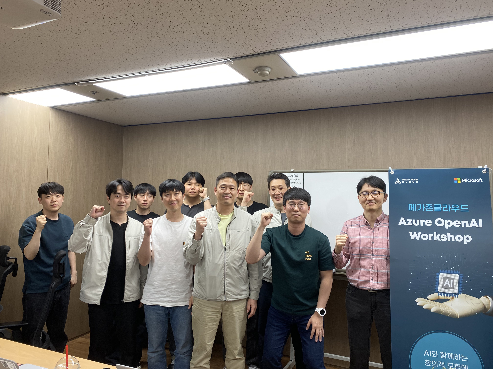
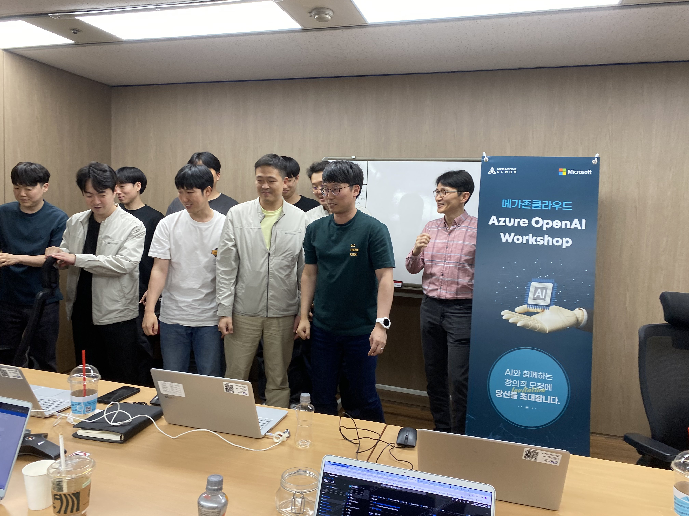
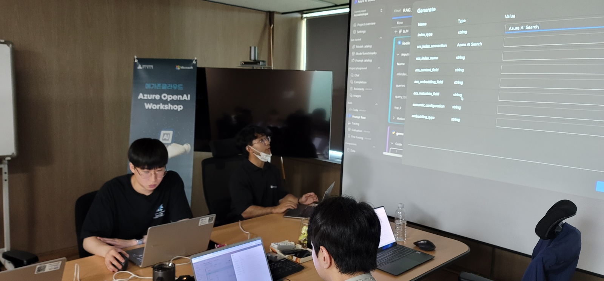
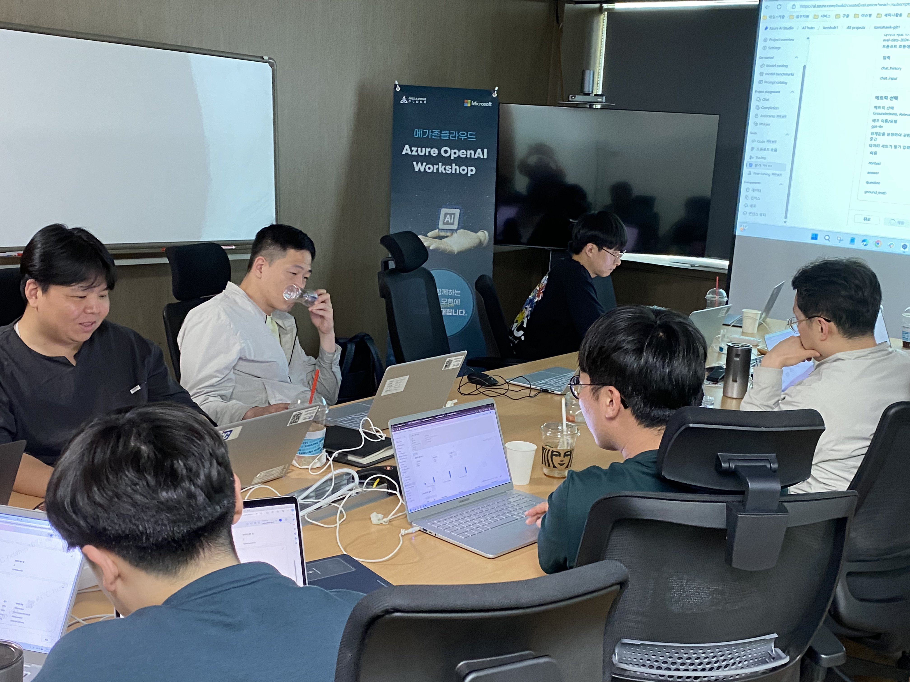
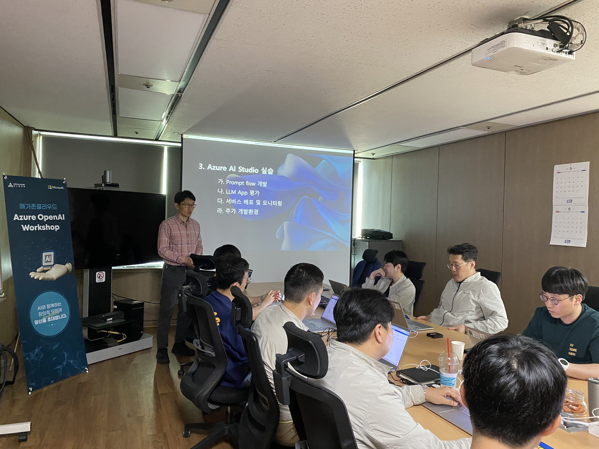
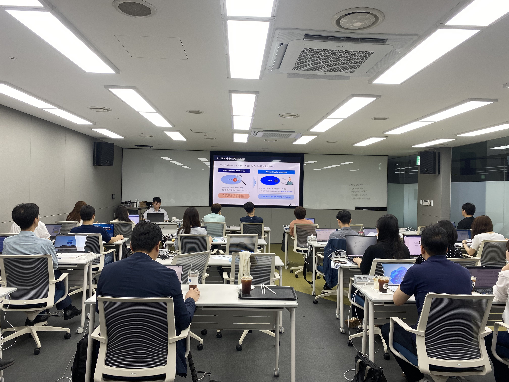
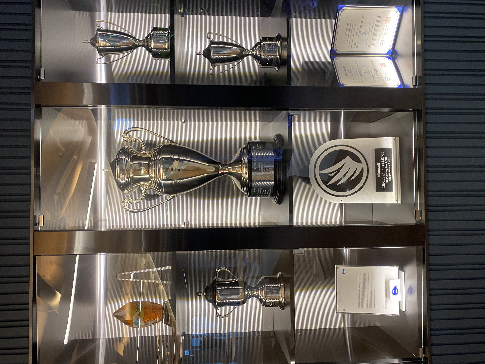

Engineer @ Microsoft
Road to
AGI
Solutions Architect · Generative AI · Cloud Infrastructure

Building the future with AI & Cloud
Tech Support Engineer (Azure PaaS Dev) at Microsoft in Seoul. Focused on Azure API Management, AI Search, Service Bus, Storage, Event Hub, and Redis.
Previously Azure OpenAI Solutions Architect at MegazoneCloud, building enterprise GenAI for KB Finance, Shinhan Card, Hyundai, POSCO.
Master's in CS, Dongguk University. Published in IEEE Transactions on Services Computing.
 Azure OpenAI Workshop
Azure OpenAI Workshop Hyundai HL Mando Seminar
Hyundai HL Mando Seminar Azure AI Training — POSCO
Azure AI Training — POSCO
MegazoneCloud × Microsoft
Enterprise AI Workshop
Azure AI Studio — KCC
Microsoft AI Security Workshop
GenAI Training Session
POSCO Azure AI Studio
Microsoft Circle of ExcellenceI build AI-powered systems at the intersection of cloud infrastructure and generative intelligence.
Multimodal RAG Avatar
RAG pipeline with semantic chunking, Azure Document Intelligence, TTS Avatar, fine-tuned phi-3 mini.
MegaChat Enterprise
Enterprise chatbot with LangChain, GPT-4, Azure AI Search, and Cosmos DB.
AI for Blockchain
ML-driven consensus optimization and SVM-based peer selection for private blockchain.
Service-Aware Dynamic Sharding for Scalable Blockchain
IEEE Transactions on Services Computing — JIF Rank 2 in CS
ML-based Endorsing Peer Set Selection for Blockchain
Korean Institute of Communications and Information Sciences
HealthAI: AI-Based Approach for Healthcare
MSc Thesis — Dongguk University
Microsoft Certifications
Azure OpenAI & Semantic Kernel · AI Document Intelligence · Azure AI Language NLP